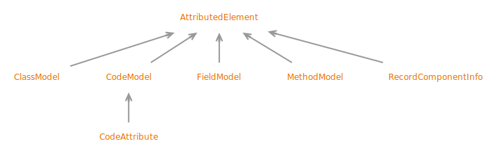

Interface AttributedElement
- All Superinterfaces:
ClassFileElement
- All Known Subinterfaces:
ClassModel, CodeAttribute, CodeModel, FieldModel, MethodModel, RecordComponentInfo
public sealed interface AttributedElement
extends ClassFileElement
permits ClassModel, CodeModel, FieldModel, MethodModel, RecordComponentInfo (not exhaustive)
A
ClassFileElement describing a class file structure that has
attributes, such as a class file, a field, a method, a Code attribute, or a record component.
Unless otherwise specified, most attributes that can be discovered in a
CompoundElement implements the corresponding membership subinterface of
ClassFileElement, and can be sent to a ClassFileBuilder to be
integrated into the built structure.
- See Java Virtual Machine Specification:
-
4.7 Attributes
- Sealed Class Hierarchy Graph:
- 
- Since:
- 24
- See Also:
{kind=link}
-
Method Summary
Modifier and TypeMethodDescriptionReturns the attributes of this structure.findAttribute(AttributeMapper<T> attr) Finds an attribute by name.findAttributes(AttributeMapper<T> attr) Finds attributes by name.
-
Method Details
-
attributes
-
findAttribute
Finds an attribute by name. This is suitable to find attributes that allow at most one instance in one structure. If this is used to find attributes that allow multiple instances in one structure, the first matching instance is returned.- API Note:
- This can easily find an attribute and send it to another
ClassFileBuilder, which is aConsumer:MethodModel method = ... MethodBuilder mb = ... method.findAttribute(Attributes.code()).ifPresent(mb); - Type Parameters:
T- the type of the attribute- Parameters:
attr- the attribute mapper- Returns:
- the attribute, or
Optional.empty()if the attribute is not present
-
findAttributes
Finds attributes by name. This is suitable to find attributes that allow multiple instances in one structure.- Type Parameters:
T- the type of the attribute- Parameters:
attr- the attribute mapper- Returns:
- the attributes, or an empty
Listif the attribute is not present
-